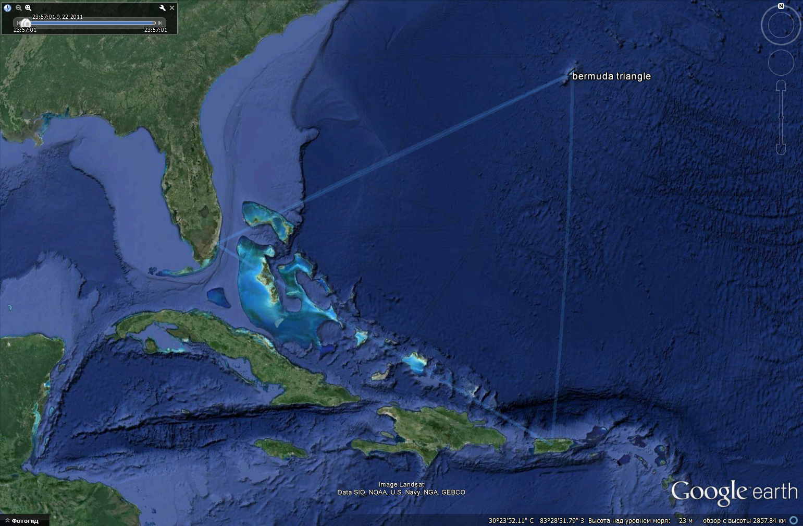

This command-line utility allows generating tracks on the surface of Earth by means a few reference points. Generated tracks can be viewed by means, for example, Google Earth. The utility generates intermediate coordinates using given points as vertexes. By such way you can outline some region or draw lines on the surface of Earth. Tracks are stored in standard format and you can use any software capable to read these data.
As an example I built boundaries of Bermuda Triangle and uploaded them to Google Earth.
Here are Bermuda Triangle coordinates and resulting GPS track.
The utility consumes set of vertexes of the track as JSON-file. Longitude and latitude must be assigned in range from -180 to 180 degrees. Negative values correspond to western longitudes and southern latitudes.
The utility requires template file to get track file in standard form.
Usage gpstracks --tf=<template file name> --pf=<point file name> --of=<output file name> --step=<angle step in degrees>.
If you are interested in development of this project feel free to contact with me by LinkedIn or Facebook.